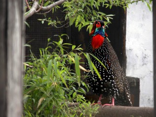
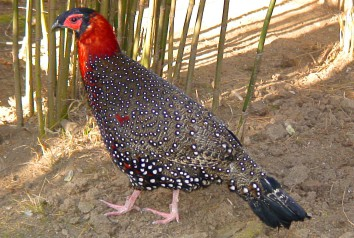
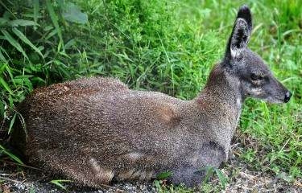
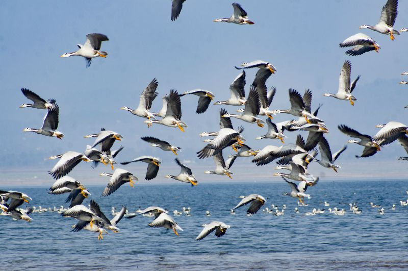

A green pearl in the Himalayan crown, Himachal Pradesh is blessed with a rich flora and fauna that graces the land with grandeur and majesty. |
 |
Snow Leopad
Home to an extremely hostile habitat of snow mountain ranges, the snow leopard is a powerful predator preying mainly upon blue sheep and the ibex. Master of its environment and mostly living a solitary life, the snow leopard is the state animal of Himachal Pradesh.
Hiamalya Yak
Standing 6 feet tall at the shoulder, the massively built yak is a long haired bovine found in the higher Himalayan region. The shaggy beast has been domesticated and besides providing meat, fibre, milk and hide, yaks also serve as the beasts of burden in Spiti, Lahaul and parts of Chamba.
Hiamalya Black Bear
This bear is a sub-specie of the Asiatic black bear with a distinctive necklace of white fur across its chest. It’s natural habitat is forested areas with rocky outcrops having caves. Black bears are very aggressive towards humans and is counted among the most deadly animals of India.
|  | Adored as ‘Jujurana’ – king among birds, the Western Tragopan is a rare pheasant found only in narrow range of the temperate Himalayas. In the wild the pheasant has been sighted in the Beas, Satluj and Ravi river catchment areas. This majestic bird is the state bird of Himachal Pradesh. |
Monal
Found in forested tracts between 2000 to 3500 meters altitude in the north-western Himalayan belt, the Monal pheasant is known for its bright plumage. Only the male has such beauty, the female is a dull brown companion. This pheasant can be spotted in the higher reaches of Shimla, Kinnaur, Kangra, Kullu and Chamba mountains.
|  | This rare deer normally lives far from human habitation in a habitat of hilly and forested environment in mountain ranges. The aromatic musk scent glands found only in adult males are for attracting mates. |
In the winter months thousands of migratory birds after flying enormous distances live out the season in the states extensive wetlands. One of them – Pong Dam wetland, has been declared a Ramsar Wetland site of international importance. The warm waters of Bhakra Dam and Pong Dam reservoirs hold an abundance of fish, which includes the sporty Golden Mahseer. Brown and rainbow trout thrive in the snow-fed cold streams of Baspa in Sangla valley, Uhl in Barot valley and Pabbar in Rohru valley. |
 |
Golden Masheer
Mahseers are a world famous game fish and the Golden Mahseer is on of the most sought after one. Also known as the Greyhound, anglers consider this fish that can weigh upto 70 Kgs as one of the finest sport-fish found in the Himalayan belt.
Trout
Introduced from Europe into snow fed cold streams in the early part of the 20th century, trout have thrived in many streams of Himachal Pradesh. An anglers sporting delight, both Brown and Rainbow trout are also commercially farmed as table fish.